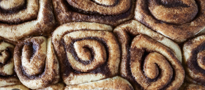

TJ's GF Cinnamon Rolls

Ingredients
- TJ's GF pizza dough
- brown sugar
- cinnamon
- butter
- vanilla extract
- cream cheese
- powdered sugar
Instructions
- follow instructions on TJ's GF dough - needs to rest for 30 min
in mean time:
- melt some butter (NOT ALL)
- mix melted butter, brown sugar, cinnamon, and splash of vanilla in bowl
- in different bowl (preferably mixer), mix cream cheese,butter, powdered sugar, & vanilla
back to dough:
- roll out dough
- spread sugar mixture on dough
- roll up dough
- cut into rolls
- place in baking dish & follow baking instructions from dough paacket
- after baking, spread cream cheese mixture on top
- enjoy! (: